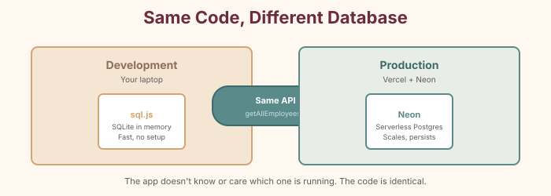
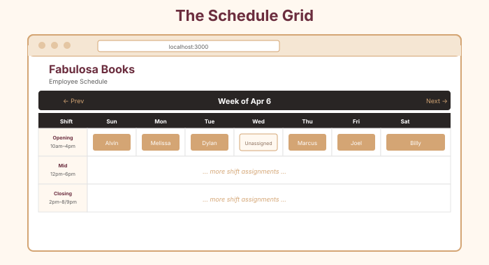

Before we build agents, we need the foundation they'll work with: the data model, the database, the API, and the basic schedule UI. This is the "non-AI" part of the app—the solid ground the agents will stand on.
The Plan
Defining the Data
Step 22: Create the TypeScript types
Create a types folder in your project root with an index.ts file:
// types/index.ts
export interface Employee {
id: number
name: string
is_on_call: number
}
export interface ScheduleEntry {
id: number
day_of_week: number
shift_type: string
employee_name: string | null
week_start_date: string
}
export interface ShiftSlot {
dayOfWeek: number
shiftType: string
employeeName: string | null
}An Employee has an id, a name, and a flag for whether they're on-call. A ScheduleEntry records who's working which shift on which day of which week. string | null means the employee name can be empty—because sometimes a shift hasn't been assigned yet.
Diagram showing the relationship between the three types — Employee feeds into ScheduleEntry (via employee_name), ShiftSlot is a simplified view for the UI
The Utility Belt
Step 23: Create helper functions
Create lib/utils.ts:
// lib/utils.ts
export const DAYS_OF_WEEK = [
'Sunday', 'Monday', 'Tuesday', 'Wednesday',
'Thursday', 'Friday', 'Saturday'
]
export const SHIFTS = [
{ type: 'opening', label: 'Opening', start: '10am', end: '4pm' },
{ type: 'mid', label: 'Mid', start: '12pm', end: '6pm' },
{ type: 'closing', label: 'Closing', start: '2pm', end: '8pm' },
]
export const SHIFTS_SATURDAY = [
{ type: 'opening', label: 'Opening', start: '10am', end: '4pm' },
{ type: 'mid', label: 'Mid', start: '12pm', end: '6pm' },
{ type: 'closing', label: 'Closing', start: '2pm', end: '9pm' },
]
export function getShiftsForDay(dayOfWeek: number) {
return dayOfWeek === 6 ? SHIFTS_SATURDAY : SHIFTS
}
export function getWeekStartDate(date?: Date): string {
const d = date ? new Date(date) : new Date()
const day = d.getDay()
const diff = d.getDate() - day
const weekStart = new Date(d.setDate(diff))
return weekStart.toISOString().split('T')[0]
}
export function getDateFromDayOfWeek(
weekStart: string,
dayOfWeek: number
): Date {
const date = new Date(weekStart)
date.setDate(date.getDate() + dayOfWeek)
return date
}
export function formatDate(date: Date): string {
return date.toLocaleDateString('en-US', {
month: 'short',
day: 'numeric',
})
}Nothing dramatic—just useful tools. getWeekStartDate figures out what Sunday starts the current week. getShiftsForDay returns the right shift times, accounting for Saturday's later closing.
The Database Layer
Step 24: Build the database module
This is the longest file in the project, but it's straightforward. Create lib/db.ts. It has two halves: one for Neon (production) and one for local SQLite (development). The app automatically uses the right one based on whether DATABASE_URL exists.
// lib/db.ts
import { neon } from '@neondatabase/serverless'
// ---- Neon (production) helpers ----
function getSQL() {
const url = process.env.DATABASE_URL
if (!url) throw new Error('DATABASE_URL is not set')
return neon(url)
}
async function initializeNeonSchema() {
const sql = getSQL()
await sql`
CREATE TABLE IF NOT EXISTS employees (
id SERIAL PRIMARY KEY,
name TEXT NOT NULL UNIQUE,
is_on_call BOOLEAN DEFAULT false,
created_at TIMESTAMPTZ DEFAULT NOW()
)
`
await sql`
CREATE TABLE IF NOT EXISTS schedule (
id SERIAL PRIMARY KEY,
day_of_week INTEGER NOT NULL,
shift_type TEXT NOT NULL,
employee_name TEXT,
week_start_date TEXT NOT NULL,
created_at TIMESTAMPTZ DEFAULT NOW(),
updated_at TIMESTAMPTZ DEFAULT NOW(),
UNIQUE(week_start_date, day_of_week, shift_type)
)
`
// Seed employees if table is empty
const existing = await sql`SELECT count(*) as cnt FROM employees`
if (Number(existing[0].cnt) === 0) {
const employees = [
{ name: 'Alvin', isOnCall: false },
{ name: 'Melissa', isOnCall: false },
{ name: 'Marcus', isOnCall: false },
{ name: 'Dylan', isOnCall: false },
{ name: 'Joel', isOnCall: false },
{ name: 'Billy', isOnCall: false },
{ name: 'Johnny Ray', isOnCall: true },
{ name: 'Carly', isOnCall: true },
]
for (const emp of employees) {
await sql`
INSERT INTO employees (name, is_on_call)
VALUES (${emp.name}, ${emp.isOnCall})
ON CONFLICT (name) DO NOTHING
`
}
}
}That UNIQUE constraint on the schedule table is important—it means you can't accidentally assign two people to the same shift. The database itself enforces the rules.
Step 25: Add the local development database
Below the Neon code in lib/db.ts, add the SQLite fallback for local development:
// ---- sql.js (local dev) helpers ----
import initSqlJs, { Database as SqlJsDatabase } from 'sql.js'
import fs from 'fs'
import path from 'path'
let localDb: SqlJsDatabase | null = null
const getDbPath = () => {
const dbDir = path.join(process.cwd(), 'data')
const dbFile = path.join(dbDir, 'schedule.db.json')
return { dbDir, dbFile }
}
function saveLocalDb() {
if (!localDb) return
const { dbDir, dbFile } = getDbPath()
if (!fs.existsSync(dbDir)) {
fs.mkdirSync(dbDir, { recursive: true })
}
const data = localDb.export()
const buffer = Buffer.from(data)
fs.writeFileSync(dbFile, JSON.stringify(Array.from(buffer)))
}
function initializeLocalSchema() {
if (!localDb) return
localDb.run(`
CREATE TABLE IF NOT EXISTS employees (
id INTEGER PRIMARY KEY AUTOINCREMENT,
name TEXT NOT NULL UNIQUE,
is_on_call BOOLEAN DEFAULT 0,
created_at DATETIME DEFAULT CURRENT_TIMESTAMP
)
`)
localDb.run(`
CREATE TABLE IF NOT EXISTS schedule (
id INTEGER PRIMARY KEY AUTOINCREMENT,
day_of_week INTEGER NOT NULL,
shift_type TEXT NOT NULL,
employee_name TEXT,
week_start_date TEXT NOT NULL,
created_at DATETIME DEFAULT CURRENT_TIMESTAMP,
updated_at DATETIME DEFAULT CURRENT_TIMESTAMP,
UNIQUE(week_start_date, day_of_week, shift_type)
)
`)
// ... seed employees same as Neon version
saveLocalDb()
}
Step 26: Add the public API functions
These are the functions the rest of the app (and our agents) will use:
// ---- Public API ----
export async function getAllEmployees() {
if (useNeon) {
await ensureNeonSchema()
const sql = getSQL()
const rows = await sql`SELECT id, name, is_on_call FROM employees ORDER BY name`
return rows.map((r: any) => ({
id: r.id, name: r.name, is_on_call: r.is_on_call,
}))
} else {
const db = await getLocalDb()
const result = db.exec('SELECT id, name, is_on_call FROM employees ORDER BY name')
if (result.length === 0) return []
return result[0].values.map((row: any) => ({
id: row[0], name: row[1], is_on_call: row[2],
}))
}
}
export async function getWeekSchedule(weekStartDate: string) { /* ... */ }
export async function updateSchedule(weekStartDate, dayOfWeek, shiftType, employeeName) { /* ... */ }The API Routes
Step 27: Create the employees API route
// app/api/employees/route.ts
import { getAllEmployees } from '@/lib/db'
import { NextResponse } from 'next/server'
export const dynamic = 'force-dynamic'
export async function GET() {
try {
const employees = await getAllEmployees()
return NextResponse.json(
employees.map((emp: any) => ({
...emp,
is_on_call: Boolean(emp.is_on_call),
}))
)
} catch (error) {
console.error('Error fetching employees:', error)
return NextResponse.json({ error: 'Failed to fetch employees' }, { status: 500 })
}
}Step 28: Create the schedule API route
// app/api/schedule/route.ts
import { NextRequest, NextResponse } from 'next/server'
import { getWeekSchedule, updateSchedule } from '@/lib/db'
import { getWeekStartDate } from '@/lib/utils'
export const dynamic = 'force-dynamic'
export async function GET(request: NextRequest) {
try {
const searchParams = request.nextUrl.searchParams
const weekStart = searchParams.get('weekStart') || getWeekStartDate()
const schedule = await getWeekSchedule(weekStart)
return NextResponse.json({ schedule, weekStart })
} catch (error) {
return NextResponse.json({ error: 'Failed to fetch schedule' }, { status: 500 })
}
}
export async function PUT(request: NextRequest) {
try {
const body = await request.json()
const { weekStart, dayOfWeek, shiftType, employeeName } = body
await updateSchedule(weekStart, dayOfWeek, shiftType, employeeName || null)
return NextResponse.json({ success: true })
} catch (error) {
return NextResponse.json({ error: 'Failed to update schedule' }, { status: 500 })
}
}API architecture: Browser makes GET/PUT requests → API Routes → Database Layer → Neon/SQLite
The Schedule UI
Step 29: Build the ShiftCell component
Create components/ShiftCell.tsx — each cell in the schedule grid is its own component. When you click it, a dropdown shows all employees:
// components/ShiftCell.tsx
'use client'
import { Employee } from '@/types'
interface ShiftCellProps {
dayOfWeek: number
shiftType: string
currentEmployee: string | null
employees: Employee[]
onUpdate: (dayOfWeek: number, shiftType: string, employeeName: string | null) => void
isSaturday: boolean
}
export default function ShiftCell({
dayOfWeek, shiftType, currentEmployee, employees, onUpdate, isSaturday,
}: ShiftCellProps) {
const regularEmployees = employees.filter(e => !e.is_on_call)
const onCallEmployees = employees.filter(e => e.is_on_call)
return (
<select
value={currentEmployee || ''}
onChange={(e) => onUpdate(dayOfWeek, shiftType, e.target.value || null)}
className={`w-full p-2 rounded text-sm font-medium cursor-pointer ...`}
>
<option value="">Unassigned</option>
<optgroup label="Regular">
{regularEmployees.map(emp => (
<option key={emp.id} value={emp.name}>{emp.name}</option>
))}
</optgroup>
<optgroup label="On-Call">
{onCallEmployees.map(emp => (
<option key={emp.id} value={emp.name}>{emp.name}</option>
))}
</optgroup>
</select>
)
}Step 30: Build the ScheduleGrid component
Create components/ScheduleGrid.tsx — the main grid with week navigation and shift cells for all 21 slots (3 shifts × 7 days).
Step 31: Wire up the main page
Replace app/page.tsx:
// app/page.tsx
import ScheduleGrid from '@/components/ScheduleGrid'
export default function Home() {
return (
<main className="min-h-screen bg-stone-50 p-8">
<div className="max-w-7xl mx-auto">
<header className="mb-8">
<h1 className="text-3xl font-bold text-stone-800">Fabulosa Books</h1>
<p className="text-stone-500 mt-1">Employee Schedule</p>
</header>
<ScheduleGrid />
</div>
</main>
)
}Step 32: Run and verify
npm run devOpen http://localhost:3000. You should see the schedule grid with week navigation and 21 "Unassigned" cells. Click any cell and pick an employee to verify the assignment works.

The Turning Point
The schedule app works. You can click each cell, pick an employee, and build a week's schedule one shift at a time. Push it to GitHub and Vercel deploys it automatically.
But right now, filling it is manual. Twenty-one cells, twenty-one clicks, twenty-one decisions. Alvin still has to do all the thinking: Who's available? Is this fair? Is the store covered?
Let's teach the app to think.